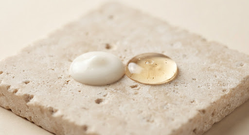

Hydration
schedule 4 min read • Jan 2025
The Best Time to Apply Your Moisturiser (Most People Get This Wrong)
Timing matters more than you think. Applying moisturiser on damp skin — right after washing your face — locks in up to 3x more water than applying it on dry skin.
person
Dr. S. Karki